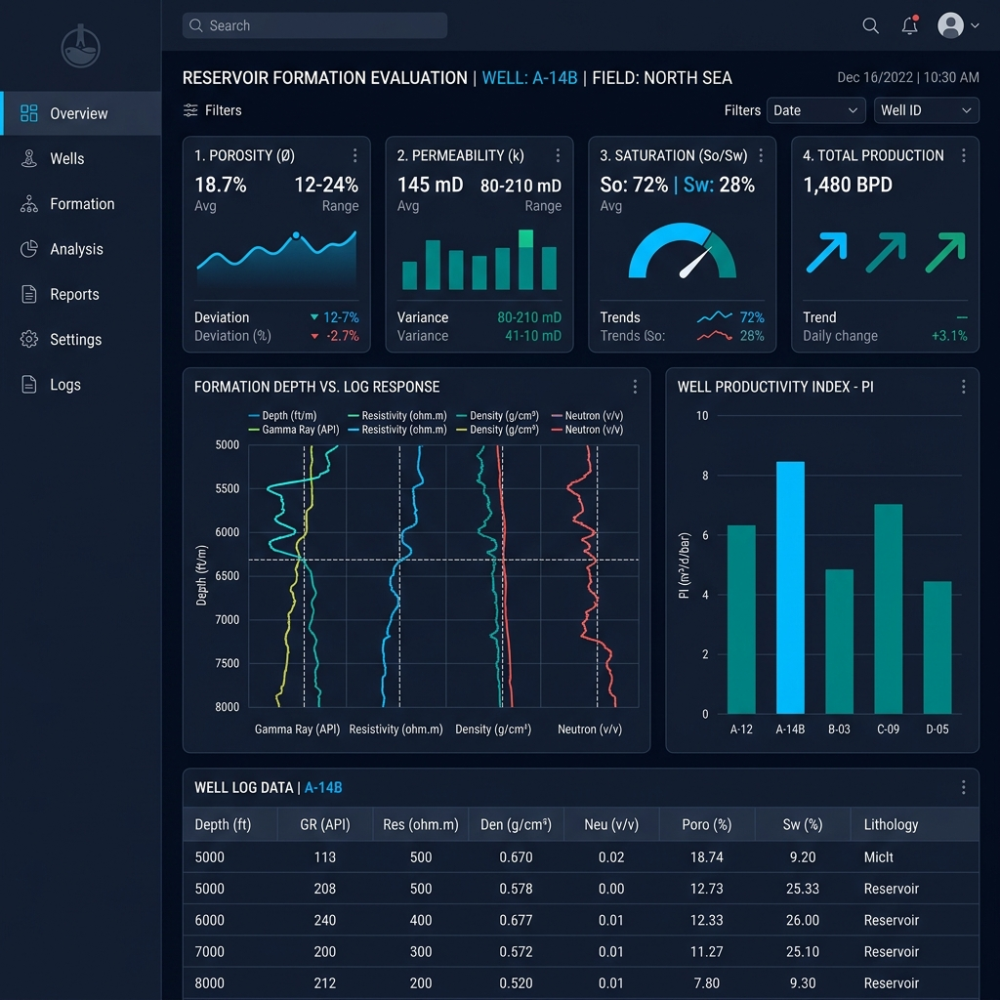

NigerDelta Formation Evaluator
A Python-based data analysis script that ingests raw well log CSV exports from Niger Delta wells and produces automated reservoir quality reports. Computes porosity, permeability indicators, and water saturation estimates using the Archie equation — then outputs colour-coded summaries and basic visualisations for quick field review.